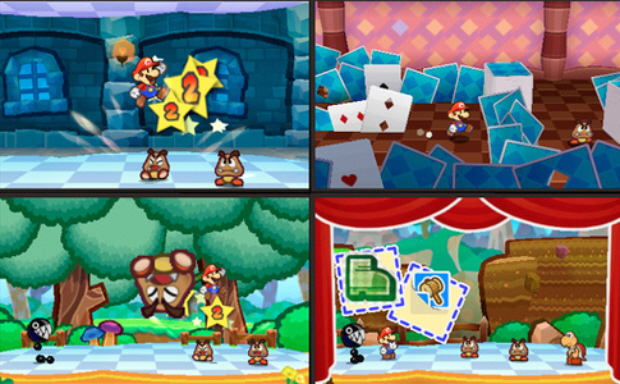
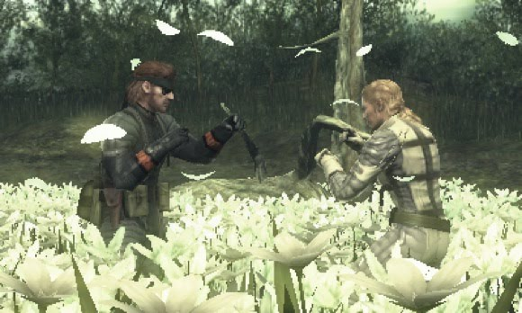
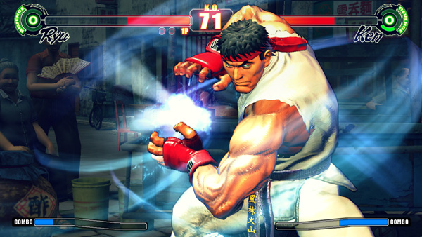
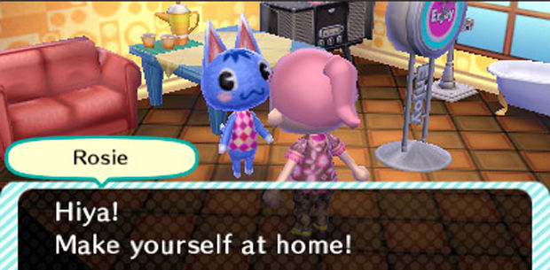

Upcoming Nintendo 3DS games
Because the Nintendo 3DS has so many features, gamedevelopers are very interested in this gaming console! The Nintendo 3DS gives them the chance to create very creative and good games! A lot of famous games like Mario, Metal Gear Solid, Nintendogs and a lot more will be made for the 3DS!There will be a lot of cool 3DS games. Here are some of the best:

Zelda 3DS:

Paper Mario 3DS:

Metal Gear Solid: Snake Eater:

Street Fighter 4:

Animal Crossing:

The Games available at the launch of the Nintendo 3DS (USA: 27 march, Europe: 25 march) is known! Here is the list:
- Pilotwings Resort (Nintendo)
- Nintendogs + cats: Golden Retriever & New Friends (Nintendo)
- Nintendogs + cats: French Bulldog & New Friends (Nintendo)
- Nintendogs + cats: Toy Poodle & New Friends (Nintendo)
- Super Street Fighter™ IV 3D Edition (Capcom / Distributed by Nintendo)
- The Sims™ 3 (Electronic Arts)
- PES 2011 3D - Pro Evolution Soccer (Konami Digital Entertainment)
- LEGO® Star Wars™ III The Clone Wars™ (LucasArts)
- RIDGE RACER™ 3D (Namco Bandai)
- Super Monkey Ball™ 3D (SEGA)
- SAMURAI WARRIORS: Chronicles (TECMO KOEI)
- Asphalt™ 3D (Ubisoft)
- Tom Clancy's™ Ghost Recon® Shadow Wars (Ubisoft)
- Tom Clancy's™ Splinter Cell® 3D (Ubisoft)
- Rayman 3D (Ubisoft)
As you can see, there are some very interesting games. And these are only the launch games, more games like Mario Kart 3DS and The Legend of Zelda: Ocarina of Time will come out later.
New registered users today: 546
Newest registered user: Ilushikrcs